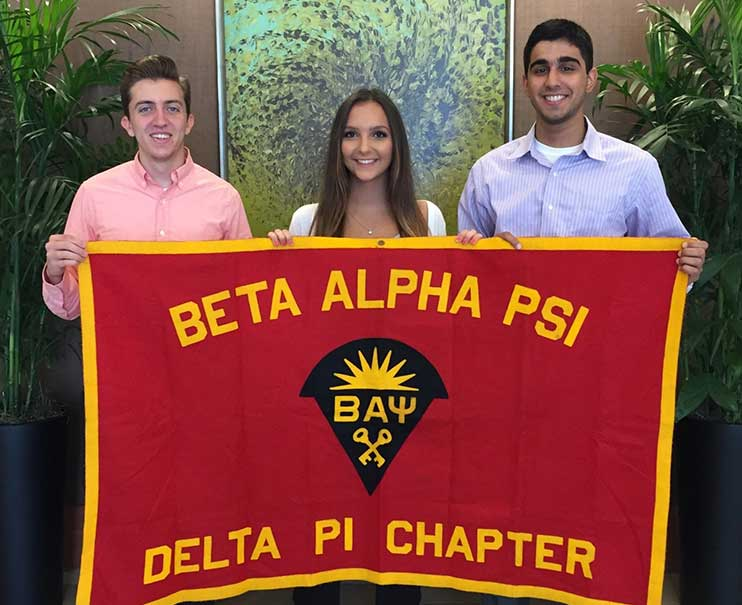
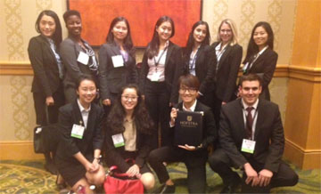

Accounting Society
Accounting Society is an undergraduate organization for Accounting, Finance, or any other business majors who wish to understand more about the accounting field. The main purpose of this organization is to educate and inform current and potential accounting students about the current job market, hence allowing them to be equipped with the necessary knowledge and skills to pursue a career in accounting. Accounting society strives to create a conducive environment for students to better understand the accounting industry through special interest talks, networking opportunities and social activities. Accounting Society meets weekly during Common Hour (Wednesdays 11:15-12:45) with Beta Alpha Psi and Tax Society. Any full-time undergraduate student at Hofstra University may become a member.
Beta Alpha Psi
Beta Alpha Psi is an honors organization for financial information students and professionals. The primary objective of Beta Alpha Psi is to encourage and give recognition to scholastic and professional excellence in the business information field. This includes promoting the study and practice of accounting, finance and information systems; providing opportunities for self-development, service and association among members and practicing professionals, and encouraging a sense of ethical, social, and public responsibility. Beta Alpha Psi was founded in 1919. Today, there are over 300 chapters on college and university campuses nationwide with over 300,000 initiated members since its inception. At Hofstra, students can induct into Beta Alpha Psi after the completion of one upper level accounting class at Hofstra. Students must have been enrolled at Hofstra for at least one semester, as well as have an overall GPA of 3.25, a cumulative accounting GPA of 3.2, and an upper-level accounting GPA of 3.0 (any class after, but not including 102). Students (both inductees and members) participate in a variety of activities including weekly meetings with major accounting firms, charity walks, office visits to accounting firms, writing articles for the Horizons Newsletter, tutoring other business students, as well as attending the semi-annual induction dinner. Weekly meetings are held during Common Hour (Wednesdays – 11:15-12:45).
NABA
The mission of NABA, Inc. is to address the professional needs of its members and build leaders that will shape the future of the accounting and finance professions. We believe that leaders are required to have an unfaltering commitment to inspire their successors to strive for excellence. Although originally formed as National Association of Black Accountants, NABA is NOT exclusively for African Americans. We are open to all business students from any ethnic background.
The goals of our organization include, but are not limited to the following:
- To promote and develop the professional skills of our members
- To provide opportunities for our members to achieve their career goals
- To encourage cooperative relations among members and cordial relationships with other professionals.
- To establish lifelong connections throughout professional career
NABA’s Hofstra University Chapter is recognized both by the Student Government Association and the official NABA organization. It has over 129 student chapters nationwide. There is no minimum GPA requirement to join NABA; we are only asking our student members to actively participate in the club (i.e. by attending our events with reputable firms) and take advantage of the opportunities that we present to them. Meeting time: Wednesday, 11:15 am – 12:45 pm, Breslin Hall, Room 106
Tax Society
Hofstra University's Tax Society gives members the opportunity to develop their professional skills through the VITA program. VITA stands for Volunteer Income Tax Assistance Program. For this program, we meet weekly from February to April preparing returns at local libraries. The Hofstra University professors and alumni provide training sessions on completing Federal and State tax returns in January. When training is completed, the IRS administers a certification program, which enables students to prepare individual Federal and New York State returns. The VITA program prepares students for their educational tax courses, and introduces them to real life work experiences, such as preparing tax returns and having client interactions. Students are also able to participate in networking opportunities with other clubs and members throughout the semester, such as weekly meetings, office visits and sport nights with the accounting firms. There are no GPA requirements and all students who are accounting majors are encouraged to join. The tax returns prepared are for taxpayers who need help with simple tax returns but are economically disadvantaged.
We meet during Common Hour (Wednesday 11:15-12:30) in Breslin Rm.106 concurrently with the Accounting Society, Beta Alpha Psi, and NABA.